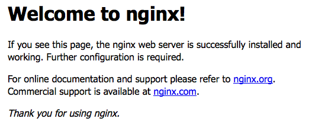

Build NGINX with PageSpeed From Source
Updated by Linode Written by Linode
Dedicated CPU instances are available!Linode's Dedicated CPU instances are ideal for CPU-intensive workloads like those discussed in this guide. To learn more about Dedicated CPU, read our blog post. To upgrade an existing Linode to a Dedicated CPU instance, review the Resizing a Linode guide.
What is Google PageSpeed?
PageSpeed is a set of modules for NGINX and Apache which optimize and measure page performance of websites. Optimization is done by minifying static assets such as CSS and JavaScript, which decreases page load time. PageSpeed Insights is a tool that measures your site’s performance, and makes recommendations for further modifications based on the results.
There are currently two ways to get PageSpeed and NGINX working together:
- Compile NGINX with support for PageSpeed, then compile PageSpeed.
Compile PageSpeed as a dynamic module to use with NGINX, whether NGINX was installed from source or a binary.
Note
Installing NGINX from source requires several manual installation steps and will require manual maintenance when performing tasks like version upgrades. To install NGINX using a package manager see the NGINX section.
This guide will show how to compile both NGINX and PageSpeed. If you would prefer to use PageSpeed as a module for NGINX, see this NGINX blog post for instructions.
Before You Begin
You should not have a pre-existing installation of NGINX. If you do, back up the configuration files if you want to retain their information, and then purge NGINX.
You will need root access to the system, or a user account with
sudoprivileges.Set your system’s hostname.
Update your system’s packages.
Considerations for a Self-Compiled NGINX Installation
Filesystem Locations: When you compile NGINX from source, the entire installation, including configuration files, is located at /usr/local/nginx/nginx/. This is in contrast to an installation from a package manager, which places its configuration files in /etc/nginx/.
Built-in Modules: When you compile NGINX from source, no additional modules are included unless explicitly specified, which means that HTTPS is not supported by default. Below you can see the output of nginx -V using the PageSpeed automated install command on Ubuntu 16.04 with no additional modules or options specified.
root@localhost:~# /usr/local/nginx/sbin/nginx -V
nginx version: nginx/1.13.8
built by gcc 5.4.0 20160609 (Ubuntu 5.4.0-6ubuntu1~16.04.5)
configure arguments: --add-module=/root/incubator-pagespeed-ngx-latest-stable
Contrast this output with the same command run on the same Ubuntu system but with the binary installed from NGINX’s repository:
root@localhost:~# nginx -V
nginx version: nginx/1.13.8
built by gcc 4.8.4 (Ubuntu 4.8.4-2ubuntu1~14.04.3)
built with OpenSSL 1.0.1f 6 Jan 2014 (running with OpenSSL 1.0.2g 1 Mar 2016)
TLS SNI support enabled
configure arguments: --prefix=/etc/nginx --sbin-path=/usr/sbin/nginx --modules-path=/usr/lib/nginx/modules --conf-path=/etc/nginx/nginx.conf --error-log-path=/var/log/nginx/error.log --http-log-path=/var/log/nginx/access.log --pid-path=/var/run/nginx.pid --lock-path=/var/run/nginx.lock --http-client-body-temp-path=/var/cache/nginx/client_temp --http-proxy-temp-path=/var/cache/nginx/proxy_temp --http-fastcgi-temp-path=/var/cache/nginx/fastcgi_temp --http-uwsgi-temp-path=/var/cache/nginx/uwsgi_temp --http-scgi-temp-path=/var/cache/nginx/scgi_temp --user=nginx --group=nginx --with-compat --with-file-aio --with-threads --with-http_addition_module --with-http_auth_request_module --with-http_dav_module --with-http_flv_module --with-http_gunzip_module --with-http_gzip_static_module --with-http_mp4_module --with-http_random_index_module --with-http_realip_module --with-http_secure_link_module --with-http_slice_module --with-http_ssl_module --with-http_stub_status_module --with-http_sub_module --with-http_v2_module --with-mail --with-mail_ssl_module --with-stream --with-stream_realip_module --with-stream_ssl_module --with-stream_ssl_preread_module --with-cc-opt='-g -O2 -fstack-protector --param=ssp-buffer-size=4 -Wformat -Werror=format-security -Wp,-D_FORTIFY_SOURCE=2 -fPIC' --with-ld-opt='-Wl,-Bsymbolic-functions -Wl,-z,relro -Wl,-z,now -Wl,--as-needed -pie'
Build NGINX and PageSpeed
The official PageSpeed documentation provides a bash script to automate the installation process.
NoteThe automated installation script will install several compilation tools needed to install PageSpeed. If you are using a production environment, ensure you uninstall any packages that are no longer needed after the installation has completed.
If you plan to serve your website using TLS, install the SSL libraries needed to compile the HTTPS module for NGINX:
CentOS/Fedora
yum install openssl-develUbuntu/Debian
apt install libssl-devRun the Automated Install bash command to start the installation:
bash <(curl -f -L -sS https://ngxpagespeed.com/install) \ --nginx-version latestDuring the build process, you’ll be asked if you want to build NGINX with any additional modules. The PageSpeed module is already included, so you don’t need to add it here.
The options below are a recommended starting point; you can also add more specialized options for your particular use case. These options retain the directory paths, user and group names of pre-built NGINX binaries, and enable the SSL and HTTP/2 modules for HTTPS connections:
--prefix=/etc/nginx --sbin-path=/usr/sbin/nginx --modules-path=/usr/lib/nginx/modules --conf-path=/etc/nginx/nginx.conf --error-log-path=/var/log/nginx/error.log --http-log-path=/var/log/nginx/access.log --pid-path=/var/run/nginx.pid --lock-path=/var/run/nginx.lock --http-client-body-temp-path=/var/cache/nginx/client_temp --http-proxy-temp-path=/var/cache/nginx/proxy_temp --http-fastcgi-temp-path=/var/cache/nginx/fastcgi_temp --http-uwsgi-temp-path=/var/cache/nginx/uwsgi_temp --http-scgi-temp-path=/var/cache/nginx/scgi_temp --user=nginx --group=nginx --with-http_ssl_module --with-http_v2_moduleNext you’ll be asked if you want to build NGINX. You’ll be shown the destination directories for logs, configuration files and binaries. If these look correct, answer Y to continue.
Configuration summary + using system PCRE library + using OpenSSL library: /usr/bin/openssl + using system zlib library nginx path prefix: "/etc/nginx" nginx binary file: "/usr/sbin/nginx" nginx modules path: "/usr/lib/nginx/modules" nginx configuration prefix: "/etc/nginx" nginx configuration file: "/etc/nginx/nginx.conf" nginx pid file: "/var/run/nginx.pid" nginx error log file: "/var/log/nginx/error.log" nginx http access log file: "/var/log/nginx/access.log" nginx http client request body temporary files: "/var/cache/nginx/client_temp" nginx http proxy temporary files: "/var/cache/nginx/proxy_temp" nginx http fastcgi temporary files: "/var/cache/nginx/fastcgi_temp" nginx http uwsgi temporary files: "/var/cache/nginx/uwsgi_temp" nginx http scgi temporary files: "/var/cache/nginx/scgi_temp" Build nginx? [Y/n]If the build was successful, you’ll see the following message:
Nginx installed with ngx_pagespeed support compiled-in. If this is a new installation you probably need an init script to manage starting and stopping the nginx service. See: http://wiki.nginx.org/InitScripts You'll also need to configure ngx_pagespeed if you haven't yet: https://developers.google.com/speed/pagespeed/module/configurationWhen you want to update NGINX, back up your configuration files and repeat steps two through four above to build with the new source version.
Control NGINX
NGINX can be controlled either by creating a systemd service or by calling the binary directly. Choose one of these methods and do not mix them. If you start NGINX using the binary commands, for example, systemd will not be aware of the process and will try to start another NGINX instance if you run systemctl start nginx, which will fail.
systemd
In a text editor, create
/lib/systemd/system/nginx.serviceand add the following unit file from the NGINX wiki:- /lib/systemd/system/nginx.service
-
1 2 3 4 5 6 7 8 9 10 11 12 13 14 15[Unit] Description=The NGINX HTTP and reverse proxy server After=syslog.target network.target remote-fs.target nss-lookup.target [Service] Type=forking PIDFile=/run/nginx.pid ExecStartPre=/usr/sbin/nginx -t ExecStart=/usr/sbin/nginx ExecReload=/bin/kill -s HUP $MAINPID ExecStop=/bin/kill -s QUIT $MAINPID PrivateTmp=true [Install] WantedBy=multi-user.target
Enable NGINX to start on boot and start the server:
systemctl enable nginx systemctl start nginxNGINX can now be controlled as with any other systemd-controlled process:
systemctl stop nginx systemctl restart nginx systemctl status nginx
NGINX binary
You can use NGINX’s binary to control the process directly without making a startup file for your init system.
Start NGINX:
/usr/sbin/nginxReload the configuration:
/usr/sbin/nginx -s reloadStop NGINX:
/usr/sbin/nginx -s stop
Configuration
NGINX
Since the compiled options specified above are different than the source’s defaults, some additional configuration is necessary. Replace example.com in the following commands with your Linode’s public IP address or domain name:
useradd --no-create-home nginx mkdir -p /var/cache/nginx/client_temp mkdir /etc/nginx/conf.d/ mkdir /var/www/example.com chown nginx:nginx /var/www/example.com mv /etc/nginx/nginx.conf.default /etc/nginx/nginx.conf.backup-defaultIn NGINX terminology, a Server Block equates to a website (similar to the Virtual Host in Apache terminology). Each NGINX site’s configuration should be in its own file with the name formatted as
example.com.conf, located at/etc/nginx/conf.d/.If you followed this guide or our Getting Started with NGINX series, then your site’s configuration will be in a
serverblock in a file stored in/etc/nginx/conf.d/. If you do not have this setup, then you likely have theserverblock directly in/etc/nginx/nginx.conf. See Server Block Examples in the NGINX docs for more info.Create a configuration file for your site with a basic server block inside:
- /etc/nginx/conf.d/example.com.conf
-
1 2 3 4 5 6 7 8 9 10server { listen 80; listen [::]:80; server_name example.com www.example.com; access_log logs/example.access.log main; error_log logs/example.error error; root /var/www/example.com/; }
Start NGINX:
systemd:
systemctl start nginxOther init systems:
/usr/sbin/nginxVerify NGINX is working by going to your site’s domain or IP address in a web browser. You should see the NGINX welcome page:

PageSpeed
Create PageSpeed’s cache location and change its ownership to the
nginxuser and group:mkdir /var/cache/ngx_pagespeed/ chown nginx:nginx /var/cache/ngx_pagespeed/Add the PageSpeed directives to your site configuration’s
serverblock as shown below.- /etc/nginx/conf.d/example.com.conf
-
1 2 3 4 5 6 7 8 9 10 11 12 13 14 15 16server { ... pagespeed on; pagespeed FileCachePath "/var/cache/ngx_pagespeed/"; pagespeed RewriteLevel OptimizeForBandwidth; location ~ "\.pagespeed\.([a-z]\.)?[a-z]{2}\.[^.]{10}\.[^.]+" { add_header "" ""; } location ~ "^/pagespeed_static/" { } location ~ "^/ngx_pagespeed_beacon$" { } }
Note
RewriteLevel OptimizeForBandwidthis a safer choice than the default CoreFilters rewrite level.NGINX supports HTTPS by default, so if your site already is set up with a TLS certificate, add the two directives below to your site’s
serverblock, pointing to the correct location depending on your system.pagespeed SslCertDirectory directory; pagespeed SslCertFile file;Reload your configuration:
/usr/sbin/nginx/ -s reloadTest PageSpeed is running and NGINX is successfully serving pages. Substitute example.com in the cURL command with your Linode’s domain name or IP address.
curl -I -X GET example.comThe output should be similar to below. If the response contains an HTTP 200 response and X-Page-Speed is listed in the header with the PageSpeed version number, everything is working correctly.
HTTP/1.1 200 OK Server: nginx/1.13.8 Content-Type: text/html Transfer-Encoding: chunked Connection: keep-alive Vary: Accept-Encoding Date: Tue, 23 Jan 2018 16:50:23 GMT X-Page-Speed: 1.12.34.3-0 Cache-Control: max-age=0, no-cacheUse PageSpeed Insights to test your site for additional improvement areas.
Join our Community
Find answers, ask questions, and help others.
This guide is published under a CC BY-ND 4.0 license.